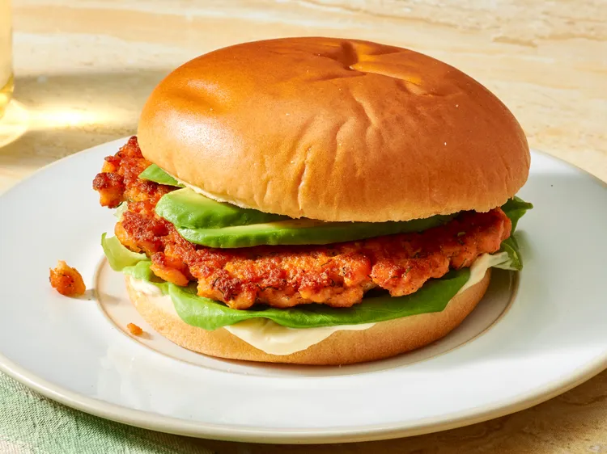

Salmon Smash Burger

Description
These salmon smash burgers are a flavorful twist on the classic beef smash burger,
featuring patties made from fresh salmon. The salmon is chopped, then mixed with
fresh dill and other seasonings. The combination of textures and fresh bold flavors
makes it a perfect choice for seafood lovers.
Ingredients
- 1 1/2 pounds fresh salmon filets, skin removed
- 1 large egg, beaten
- 1 tablespoon all-purpose flour
- 1 tablespoon chopped fresh dill
- 1 (1 ounce) packet McCormick® Burger Business by Tabitha Brown Seasoning Mix
Steps
- Gather all ingredients.
- Chop salmon or place in a food processor, and pulse a few times to chop.
- Combine salmon, egg, flour, dill, and burger seasoning in a bowl and mix gently.
- Scoop about 1 cup mixture and form into a ball for 4 to 5 balls.
- Heat 1 tablespoon oil in a large cast iron skillet or griddle over medium-high heat.
Home